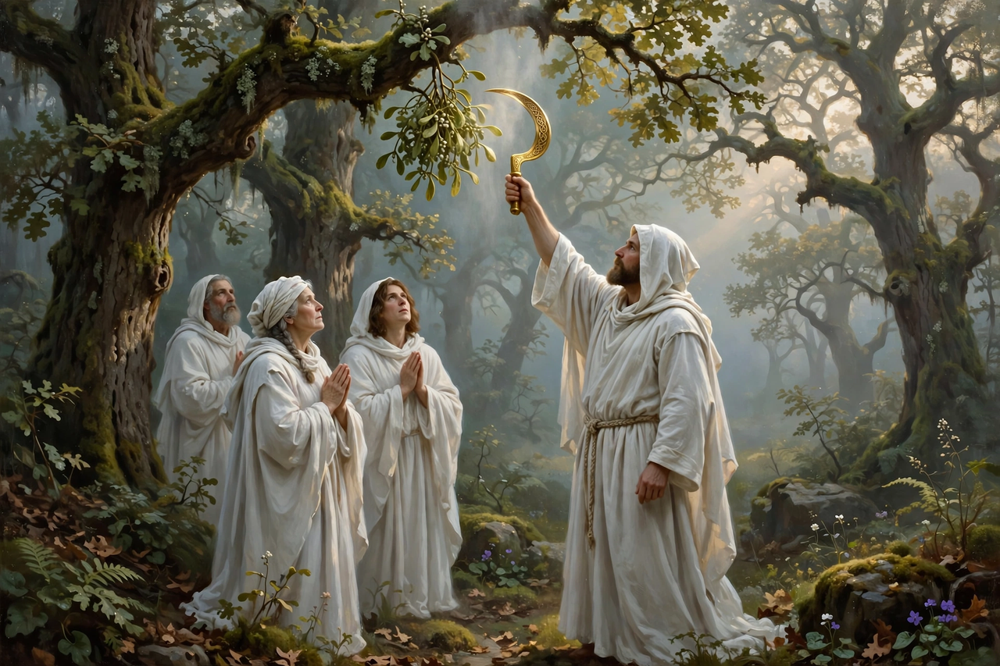

Druids
| Druids | |
|---|---|
| Regions | Gaul, Britain, Ireland |
| Period | Iron Age to Roman period |
| Functions | Priests, judges, teachers, diviners, lore-keepers |
| Principal sources | Julius Caesar, De Bello Gallico; Pliny the Elder; Tacitus |
| Holy sites | Sacred groves (nemeton); Anglesey (Mona) |

A druid was a member of the learned and priestly class in the ancient Celtic cultures of Gaul, Britain and Ireland. Druids combined the roles of priest, judge, teacher, healer and keeper of oral tradition; together with bards and seers (filid, vates) they formed the intellectual elite of Celtic society. Because they committed nothing of their teaching to writing, knowledge of them comes almost entirely from Greco-Roman authors and from medieval Irish and Welsh literature written centuries after their suppression.
Classical accounts
The fullest account is Julius Caesar's in Book 6 of De Bello Gallico. Caesar reports that druidic training could last twenty years, was conducted entirely by memorisation, and that the doctrine was believed to have originated in Britain. Druids presided over sacrifices, judged disputes and crimes, taught that souls are immortal and pass into other bodies, and studied astronomy, natural philosophy and theology. He also alleges human sacrifice of criminals in great wicker effigies — a claim repeated by other authors and sometimes treated by modern scholars as hostile propaganda, though bog bodies and ritual deposits lend it partial, debated support. Pliny the Elder describes the famous rite of cutting mistletoe from an oak with a golden sickle on the sixth day of the moon, followed by the sacrifice of white bulls, and connects the word druid with the Greek drus (oak).
Suppression
Rome moved against the druids as a focus of resistance: Suetonius records that Claudius abolished the order in Gaul, and in AD 60 Suetonius Paulinus massacred the druids of Anglesey (Ynys Môn), described by Tacitus with altars "drenched in human blood." In Ireland, where Rome never ruled, druids appear in early medieval literature increasingly as sorcerers and opponents of St Patrick, gradually losing status as Christianity spread.
Modern revival
From the seventeenth century, antiquarians such as John Aubrey and William Stukeley wrongly credited druids with building Stonehenge, igniting a romantic "Druidmania." The Ancient Order of Druids was founded in 1781, Welsh cultural druidry (the Gorsedd) in 1792, and twentieth-century neopagan movements — including the Order of Bards, Ovates and Druids (1964) — developed modern Druidry as a nature-centred spirituality, celebrating solstices at sites such as Stonehenge.
See also: Celts · Galatians · Hallstatt culture